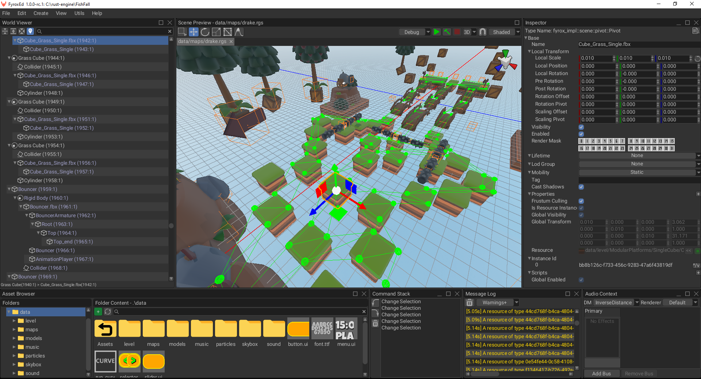

FyroxEd Overview
FyroxEd - is the native editor of Fyrox, it is made with one purpose - to be an integrated game development environment that helps you build your game from start to finish with relatively low effort.
You'll be spending a lot of time in the editor, so you should get familiar with it and learn how to use its basic functionalities. This chapter will guide you through the basics, advanced topics will be covered in their respective chapters.
Windows
When you open the editor for the first time you may be confused by the number of windows, buttons, lists, etc. you'll be presented with. Each window serves a different purpose, but all of them work together to help you make your game. Let's take a look at a screenshot of the editor and learn what each part of it is responsible for (please note that this can change over time, because development is quite fast and images can easily become outdated):

- World viewer - shows every object in the scene and their relationships. Allows inspecting and editing the contents of the scene in a hierarchical form.
- Scene preview - renders the scene with debug info and various editor-specific objects (gizmos, entity icons, etc.). Allows you to select, move, rotate, scale, delete, etc. various entities. The Toolbar on its left side shows available context-dependent tools.
- Inspector - allows you to modify various properties of the selected object.
- Message Log - displays important messages from the editor.
- Navmesh Panel - allows you to create, delete, and edit navigational meshes.
- Command Stack - displays your most recent actions and allows you to undo or redo their changes.
- Asset Browser - allows you to inspect the assets of your game and to instantiate resources in the scene, among other things.
- Audio Context - allows you to edit the settings of the scene's sound context (global volume, available audio buses, effects, etc.)
Creating or loading a Scene
FyroxEd works with scenes - a scene is a container for game entities, you can create and edit one scene at a time. You must have a
scene loaded to begin working with the editor. To create a scene go to File -> New Scene.
To load an existing scene, go to File -> Load and select the desired scene through the file browser. Recently opened
scenes can be loaded more quickly by going to File -> Recent Scenes and selecting the desired one.
Populating a Scene
A scene can contain various game entities. There are two equivalent ways of creating these:
- By going to
Createin the main menu and selecting the desired entity from the drop down. - By right-clicking on a game entity in the
World Viewerand selecting the desired entity from theCreate Childsub-menu.
Complex objects usually made in 3D modelling software (Blender, 3Ds Max, Maya, etc.) can be saved in various formats.
Fyrox supports FBX format, which is supported by pretty much any 3D modelling software. You can instantiate such objects
by simply dragging the one you want and dropping it on the Scene Preview. While dragging it, you'll also see a preview
of the object.
You can do the same with other scenes made in the editor (rgs files), for example, you can create a scene with a few objects in it
with some scripts and re-use them within other scenes. Such scenes are called prefabs.
Saving a Scene
To save your work, go to File -> Save. If you're saving a new scene, the editor will ask you to specify a file name and a
path to where the scene will be saved. Scenes loaded from a file will automatically be saved to the path they were loaded
from.
Undoing and redoing
FyroxEd remembers your actions and allows you to undo and redo the changes done by these. You can undo or redo changes by either
going to Edit -> Undo/Redo or through the usual shortcuts: Ctrl+Z - to undo, Ctrl+Y - to redo.
Controls
There are number of control keys that you'll be using most of the time, pretty much all of them work in the Scene Preview window:
Editor camera movement
Click and hold [Right Mouse Button] within the Scene Preview window to enable the movement controls:
[W][S][A][D]- Move camera forward/backward/left/right[Space][Q]/[E]- Raise/Lower Camera[Ctrl]- Speed up[Shift]- Slowdown
Others
[Left Mouse Button]- Select[Middle Mouse Button]- Pan camera in viewing plane[1]- Select interaction mode[2]- Move interaction mode[3]- Scale interaction mode[4]- Rotate interaction mode[5]- Navigational mesh editing mode[6]- Terrain editing interaction mode[Ctrl]+[Z]- Undo[Ctrl]+[Y]- Redo[Delete]- Delete current selection.
Play Mode
One of the key features of the editor is that it allows you to run your game from it in a separate process. Use the Play/Stop
button at the top of the Scene Preview window to enter or leave Play Mode. Keep in mind, that the editor UI will be locked while
you're in Play Mode.
Play Mode can be activated only for projects made with the fyrox-template (or for projects with a similar structure). The editor
calls cargo commands to build and run your game in a separate process. Running the game in a separate process ensures
that the editor won't crash if your game does, it also provides excellent isolation between the game and the editor, not
giving a chance to break the editor by running the game.
Additional Utilities
There are also number of powerful utilities that will make your life easier, they can be found under the Utils section of the
main menu:
- Curve Editor - allows you to create and edit curve resources to make complex laws for game parameters.
- Path Fixer - helps you fix incorrect resource references in your scenes.